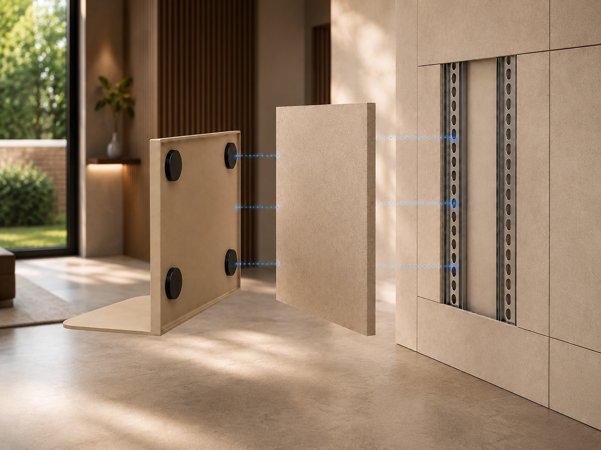
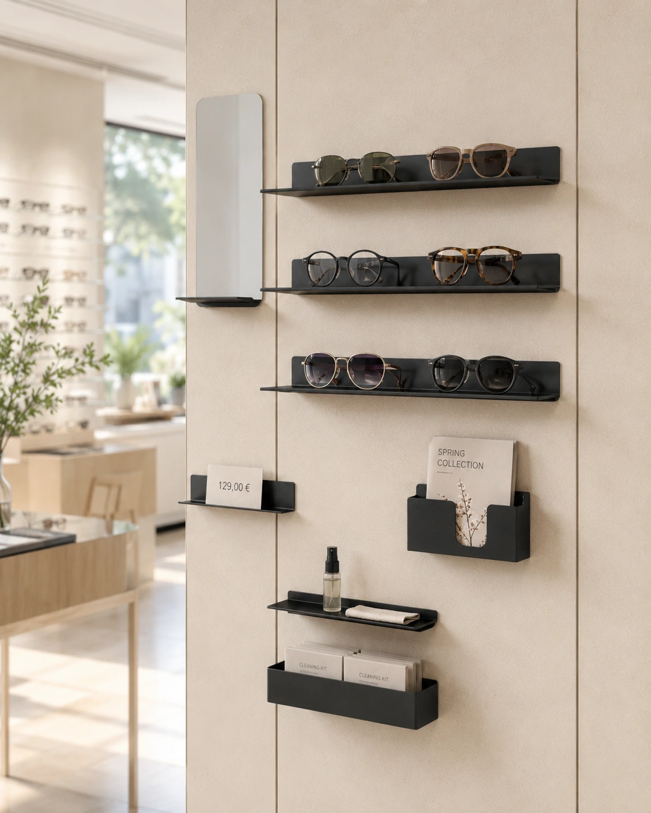
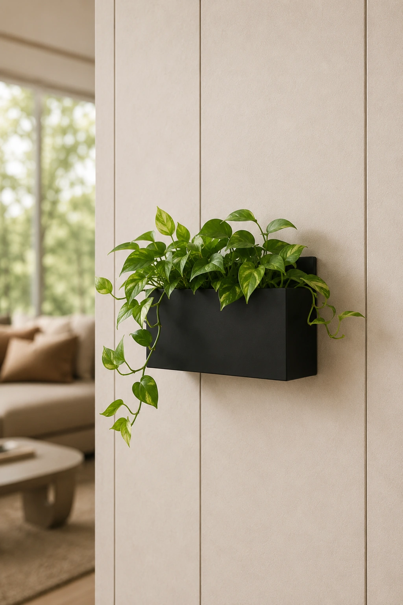
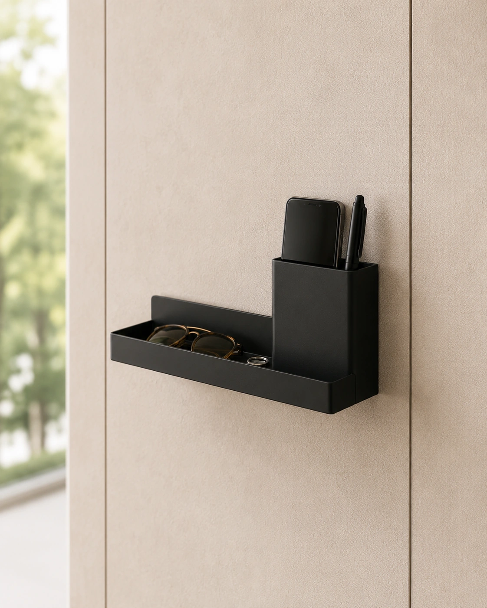
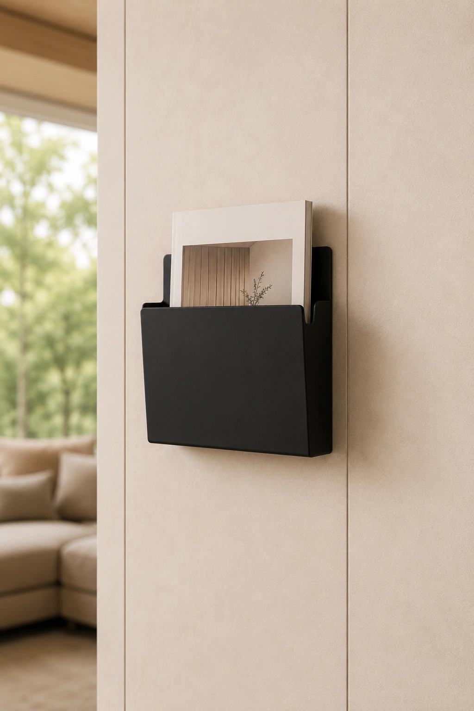
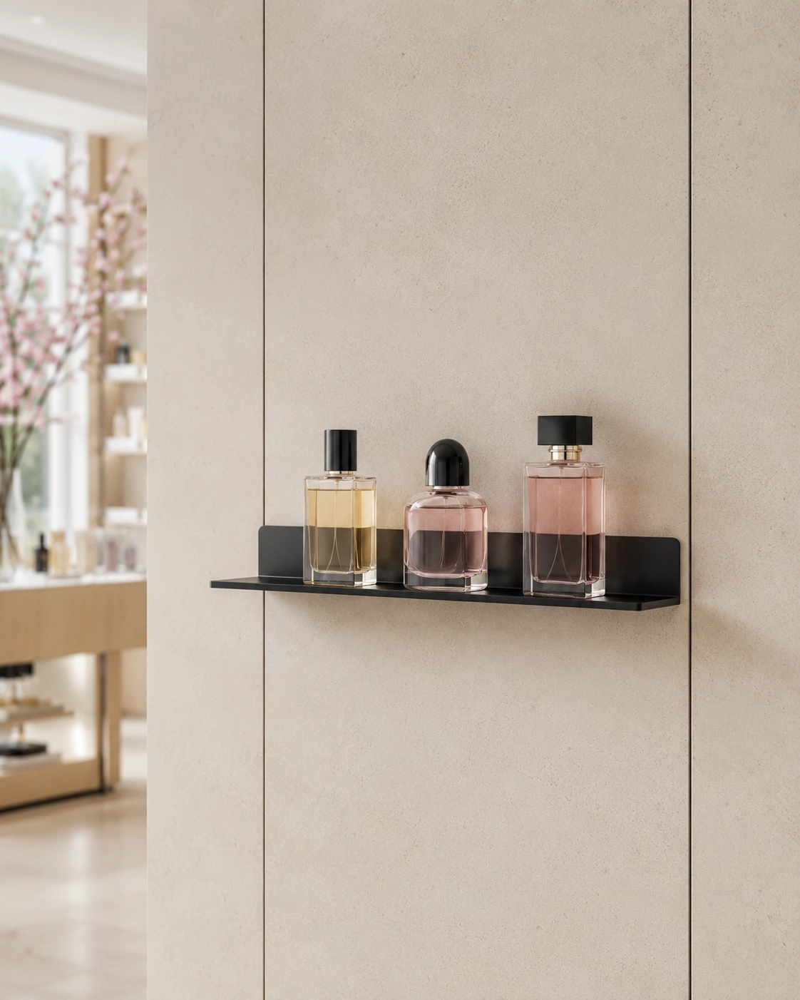
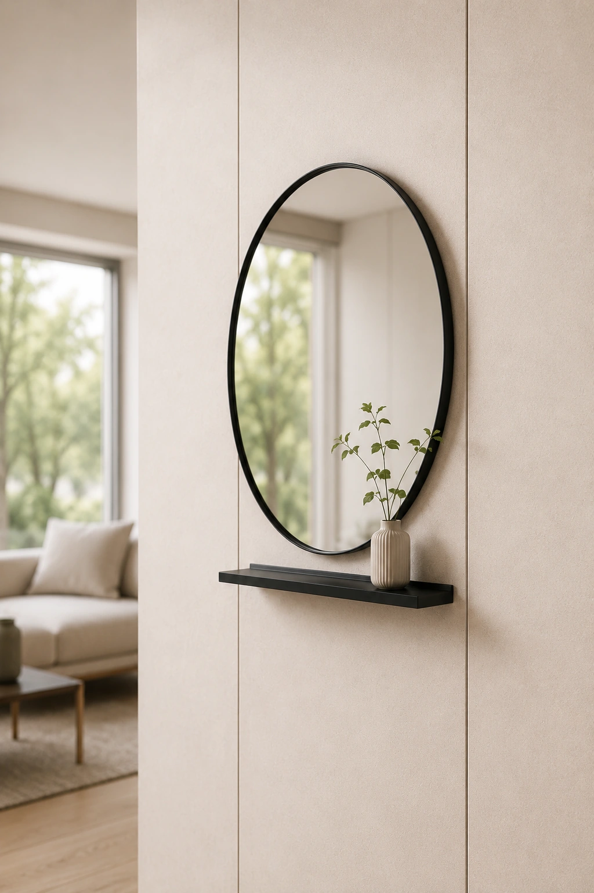
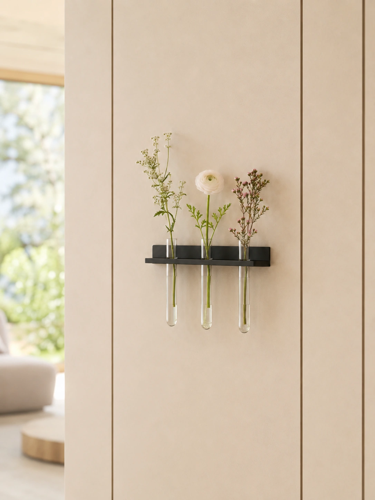

Organizzare
Supporti, contenitori e piccoli piani d’appoggio portano ordine alla parete senza aggiungere mobili, forare la superficie o introdurre elementi fissi.
03 · Accessori magnetici
Nessun foro. Nessuna vite a vista. Ogni accessorio trova il proprio posto e può cambiarlo domani.

Il gesto
La parete riconosce la funzione.
Magneti antiscivolo integrati nella schiena del componente garantiscono un fissaggio discreto e stabile alla struttura nascosta IconicWall.
Scopri la tecnologia ↗La parete cambia funzione senza cambiare identità.
Gli accessori magnetici IconicWall aggiungono nuove possibilità d’uso alla superficie: ordinano oggetti quotidiani, valorizzano prodotti, accolgono elementi decorativi. Ogni elemento si aggancia alla struttura nascosta, può essere riposizionato nel tempo e mantiene pulito il disegno della parete.
Supporti, contenitori e piccoli piani d’appoggio portano ordine alla parete senza aggiungere mobili, forare la superficie o introdurre elementi fissi.

Ripiani e supporti magnetici valorizzano prodotti, campioni e oggetti in vendita, trasformando IconicWall in uno spazio espositivo riconfigurabile.

Elementi verdi, specchi e dettagli decorativi aggiungono atmosfera senza appesantire la parete e senza interrompere la continuità del progetto.
Una famiglia di accessori magnetici,
pensata per cambiare insieme allo spazio.





La funzione entra nella parete con discrezione.
E può cambiare posto quando cambia lo spazio.